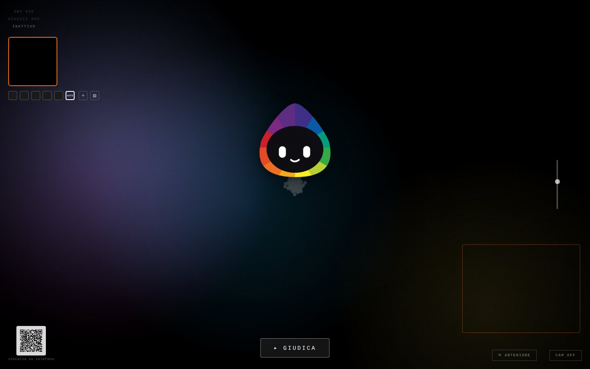

L'installazione
Una pagina web che diventa opera interattiva: camera, palette, la risposta del visitatore, la lettura dell'AI, la domanda. Riconosce anche le carte del mazzo con OpenCV e racconta cosa vede, come la legge la macchina e cosa dice la carta. Un QR la apre sul telefono.